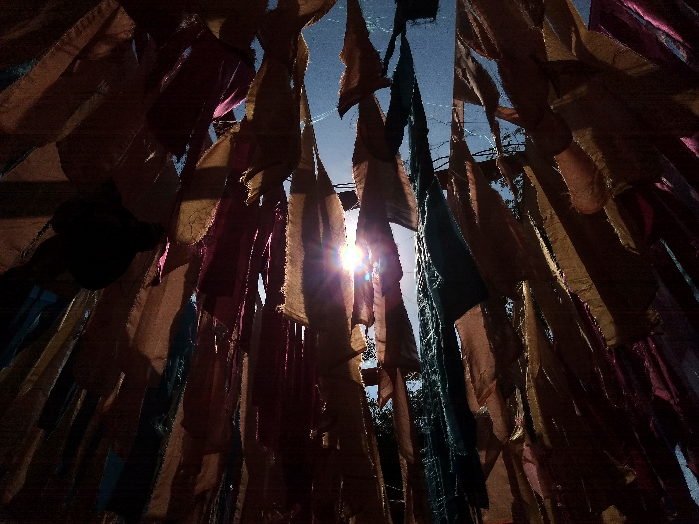

Ladakh: A Heaven on Earth
Last Updated: January 19, 2020
Ladakh is a remote place belonging to a northern Indian state, which for some reason doesn’t receive as many tourists as the rest of the country. I was wondering: Why is that i wonder? This region is a bit remote and of difficult access. Normally, people don’t know about it or haven’t even heard of it. Why? Maybe it’s because Hindu culture can’t be enjoyed here, which is one of the mains reasons for going to India. So what can you do and find in there? Ladakh is basically a Himalayan region where authentic Tibetan people live in. It’s often called the little Tibet, and for the Indians themselves, this is the best spot where to spend their vacations in India. Why? In India chaos rules, it’s overpopulated and there’s traffic everywhere. Ladakh is a different place which differs from all these stereotypes. Here you find peace and silence, which combined with the stunning Himalayan landscape and the Tibetan culture visible in every corner, sometimes you may even forget that you are actually in India. That being said, the following Travel guide to Ladakh aims to provide you with detailed travel tips such as prices, accommodation, and transportation, as well as an overview of the main things to do and see, so you know what to expect upon your arrival in Ladakh.
The ultimate travel guide to Ladakh
Ladakh is a region that belongs to the Indian state Jammu and Kashmir, which extends from the Kunlun mountain range to the Great Himlayas. The whole area of Ladakh is located at a very high altitude. Its capital, Leh, is at 3,500 meters above sea level, and has a large number of peaks reaching over 6,000 meters
Top things to do in Ladakh
Ladakh might be a small region within India, but it’s actually double the size of Switzerland. Nevertheless, the unpopulated mountains occupy most part of it. In my opinion, the top things to do and see in Ladakh are: Leh If you arrive by plane, the capital is going to be your first destination. Leh is a fantastic place to explore. Leh palace, the most iconic building of the city, is definitely worth a visit. You can also watch the sunset from Shanti stupa, visit Tibetan refugee markets or simply wander around its narrow alleys and streets. In Leh, you will get a first glimpse of what Tibetan culture is like
Nubra Valley A vast sea of sand dunes in the Himalaya itself. Can you believe it? Nubra Valley is a desert similar to those of Arabia but located at 4,000 meters above sea level and surrounded by the Himalayan range. Here you also find two-humped hairy camels. Tibetans claim that the origin of this desert comes from Tethys, a sea from the depths from which the Himalayas are supposed to have risen.
Khardung La This is nothing less than the highest motorable road in the world. It connects Leh with Nubra Valley and its highest point passes over 5,600 meters.
Pangong Tso Lake A lake located at 4,350m above sea level which extends across India and China. People go to this lake to see the stunning landscape and for hiking. Chemrey gompa In my opinion, the most beautiful gompa out there in Ladakh, having been built and perfectly shaped on the top of a steep hill. Looking at it is merely impressive.